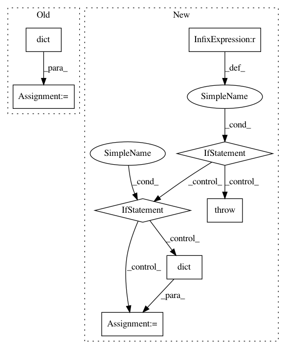

980fe014b6215730ac4fdfa451b067e6fb44e622,tensorforce/agents/dpg.py,DeterministicPolicyGradient,__init__,#DeterministicPolicyGradient#Any#Any#Any#Any#Any#Any#Any#Any#Any#Any#Any#Any#Any#Any#Any#Any#Any#Any#Any#Any#Any#Any#Any#Any#Any#Any#,129
Before Change
predict_terminal_values=predict_terminal_values
)
baseline_policy = dict(network=critic_network, distributions=dict(float="gaussian"))
baseline_optimizer = critic_optimizer
baseline_objective = dict(type="value", value="action")
super().__init__(
After Change
// Config, saver, summarizer, recorder
config=None, saver=None, summarizer=None, recorder=None,
// Deprecated
estimate_terminal=None, critic_network=None, **kwargs
):
raise TensorforceError(message="Temporarily broken.")
if estimate_terminal is not None:
raise TensorforceError.deprecated(
name="DPG", argument="estimate_terminal", replacement="predict_terminal_values"
)
if critic_network is not None:
raise TensorforceError.deprecated(
name="DPG", argument="critic_network", replacement="critic"
)
self.spec = OrderedDict(
agent="dpg",
states=states, actions=actions, memory=memory, batch_size=batch_size,
max_episode_timesteps=max_episode_timesteps,
network=network, use_beta_distribution=use_beta_distribution,
update_frequency=update_frequency, start_updating=start_updating,
learning_rate=learning_rate,
horizon=horizon, discount=discount, predict_terminal_values=predict_terminal_values,
critic=critic, critic_optimizer=critic_optimizer,
preprocessing=preprocessing,
exploration=exploration, variable_noise=variable_noise,
l2_regularization=l2_regularization, entropy_regularization=entropy_regularization,
parallel_interactions=parallel_interactions,
config=config, saver=saver, summarizer=summarizer, recorder=recorder
)
policy = dict(
type="parametrized_distributions", network=network, temperature=0.0,
use_beta_distribution=use_beta_distribution
)
In pattern: SUPERPATTERN
Frequency: 3
Non-data size: 8
Instances
Project Name: reinforceio/tensorforce
Commit Name: 980fe014b6215730ac4fdfa451b067e6fb44e622
Time: 2020-08-13
Author: alexkuhnle@t-online.de
File Name: tensorforce/agents/dpg.py
Class Name: DeterministicPolicyGradient
Method Name: __init__
Project Name: bokeh/bokeh
Commit Name: 5f6b5d3851d0b719f401eafbfc569420405d1ef3
Time: 2016-08-16
Author: canavandl@gmail.com
File Name: bokeh/models/formatters.py
Class Name: FuncTickFormatter
Method Name: from_py_func
Project Name: reinforceio/tensorforce
Commit Name: 980fe014b6215730ac4fdfa451b067e6fb44e622
Time: 2020-08-13
Author: alexkuhnle@t-online.de
File Name: tensorforce/agents/ac.py
Class Name: ActorCritic
Method Name: __init__